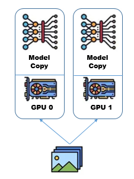

4. Scaling Python Workloads
4.1. Overview
This tutorial provides a comprehensive guide on scaling Python workloads using Cyclone, covering frameworks for deep learning and hardware acceleration. The tutorial begins by executing Python scripts on CPUs, gradually progressing to single GPU, multi GPU, and multi-node distributed training using PyTorch's Distributed Data Parallel framework. Each section includes modifications to SLURM scripts for resource allocation and Python code adaptations to leverage the targeted hardware configurations. The tutorial concludes with troubleshooting tips and a recap of practices mentioned.
4.2. Learning Objectives
By the end of this tutorial, participants will be able to:
- Write and execute SLURM scripts to run Python scripts on Cyclone in different configurations (CPU, single GPU, multi-GPU, multi-node).
- Understand the resource allocation process using SLURM for Python workloads.
- Optimize Python workflows for HPC by leveraging distributed computing frameworks like PyTorch DDP.
- Troubleshoot common issues when running Python jobs on Cyclone.
4.3. Prerequisites
-
T01 - Introduction to HPC Systems: This tutorial will give you some basic knowledge on HPC systems and basic terminologies.
-
T02 - Accessing and Navigating Cyclone:This tutorial will give you some basic knowledge on how to connect, copy files and navigate the HPC system.
4.4. Why Use Cyclone for Python Workloads?
- Scalability: Using Cyclone, workloads can be scaled across multiple CPUs and GPUs, which enables faster processing of large datasets and complex computations.
- Performance Gains: Utilizing advanced hardware/software such as GPUs, high-speed interconnects and SLURM, Python workflows can be executed more efficiently.
4.5. Tools and Frameworks
- SLURM - Used for job scheduling, job monitoring and environment setup
- PyTorch - Open-source deep learning framework that’s known for its flexibility and ease-of-use.
- CUDA - Enables GPU acceleration for computational tasks through APIs to simplify GPU-based parallel processing for HPC, data science and AI.
- NCCL - Implements multi-GPU and multi-node communication that is optimized for NVIDIA GPUs and networking.
4.6. Training AI models on Cyclone
This section demonstrates how to run Python scripts with multiple environment configurations on Cyclone, focusing on scaling Python workloads by leveraging Pytorch, CUDA and NVIDIA's NCCL backend.
4.6.1. Running Python Scripts on CPU
The script below demonstrates how to sructure a training pipeline for deep learning using PyTorch on a CPU. Firstly, the necessary libraries that handle tasks such as data loading and model training are imported. The main workflow includes downloading the dataset, as well as defining and training a Convolutional Neural Network (CNN).
import os
import argparse
import torch
import torch.nn as nn
import torch.optim as optim
from torchvision import datasets, transforms
from torch.utils.data import DataLoader
from model import CNN_classifier
import time
def train(model, dataloader: DataLoader, args):
print("Entering training loop...")
criterion = nn.NLLLoss()
optimizer = optim.Adam(params=model.parameters(), lr = args.lr)
model.train()
for epoch in range(1, args.epochs + 1):
epoch_loss: float = 0.0
for batch_idx, (data,target) in enumerate(dataloader):
optimizer.zero_grad()
output = model(data)
loss = criterion(output, target)
loss.backward()
optimizer.step()
epoch_loss += loss.item()
if batch_idx % 100 == 0:
print(f'Train Epoch: {epoch} [{batch_idx * len(data)}/{len(dataloader.dataset)} '
f'({100. * batch_idx / len(dataloader):.0f}%)]\tLoss: {loss.item():.6f}')
print("Exiting training loop...")
def main():
parser = argparse.ArgumentParser(prog="Pytorch on HPC")
parser.add_argument("--batch_size", type=int, default=16)
parser.add_argument("--epochs", type=int, default=5)
parser.add_argument("--lr", type=float, default=0.001)
args = parser.parse_args()
transform = transforms.Compose([
transforms.ToTensor(),
transforms.Normalize((0.1307,), (0.3081,))
])
train_dataset = datasets.MNIST('./data', train=True, download=True, transform=transform)
train_loader = DataLoader(
train_dataset,
batch_size = args.batch_size,
shuffle=False,
)
model = CNN_classifier()
time_start = time.time()
train(model=model, dataloader= train_loader, args=args)
time_stop = time.time()
print(f"Training time = {time_stop-time_start}" )
if __name__ == "__main__" :
main()
To execute the above script, first navigate to your
$HOME directory, create and enter the new directory for this tutorial.
[smillas@front02 ~]$ cd $HOME
[smillas@front02 ~]$ mkdir tutorial_04
[smillas@front02 ~]$ cd tutorial_04
Next, create the source file
cnn_cpu.py
[smillas@front02 tutorial_04]$ touch cnn_cpu.py
[smillas@front02 tutorial_04]$ nano cnn_cpu.py # copy the python code above
and copy the code above. To execute
cnn_cpu.py you need to create the SLUMR file run_cpu.SLURM
[smillas@front02 tutorial_04]$ touch run_cpu.SLURM
[smillas@front02 tutorial_04]$ chmod +x run_cpu.SLURM # make the file executable
[smillas@front02 tutorial_04]$ nano run_cpu.SLURM # copy the SLURM script below
and copy the following:
#!/bin/bash
#SBATCH --job-name=pytorch_cpu # Job name
#SBATCH --nodes=1 # Number of nodes
#SBATCH --cpus-per-task=10 # CPUs per task
#SBATCH --time=02:00:00 # Maximum runtime (HH:MM:SS)
#SBATCH --partition=cpu # Partition name
#SBATCH --output=logs/cpu_%j.out # Standard output log
#SBATCH --error=logs/cpu_%j.err # Standard error log
module load PyTorch/1.12.0-foss-2022a-CUDA-11.7.0
module load torchvision/0.13.1-foss-2022a-CUDA-11.7.0
# Run Python script
srun python cnn_cpu.py \
--batch_size 16 \
--epochs 5 \
--lr 0.001
The
run_cpu.SLURM script is designed to execute the cnn_cpu.py on Cyclone using SLURM. In the script, the number of nodes, CPU cores, runtime and partition are specified, which instruct SLURM to allocate 10 CPU cores from a single node for 2:00:00 hours for this job.
Next, the environment is setup using Cyclones available modules for Pytorch and Torchvision ensuring all necessary libraries and dependencies are available.
Finally, the Python script is launched using
srun, which executes the specified script with the allocated resources and given runtime arguments.
To run the script:
sbatch run_cpu.SLURM
After executing the above script, two seperate output logs will be generated in the
logs/ directory.
cpu_<jobid>.out
cpu_<jobid>.err
Navigate to the
logs/ directory with the terminal interface using cd logs/ or by using VScode's file explorer.
Next, view the contents of the
cpu_.out . To use the terminal, first execute module load nano to load a Linux text editor and enter the command nano cpu_.out . If navigating using VScode, simply double click the output file.
Entering training loop...
Train Epoch: 1 [0/60000 (0%)] Loss: 2.300653
Train Epoch: 1 [1600/60000 (3%)] Loss: 0.546140
.
.
Train Epoch: 5 [57600/60000 (96%)] Loss: 0.000070
Train Epoch: 5 [59200/60000 (99%)] Loss: 0.000981
Exiting training loop...
Training time = 192.2544162273407
Training this simple CNN classifier for 5 epochs on the relatively small MNIST dataset took a total of 192 seconds. This process can be made significantly more efficient by utilizing Cyclones GPU cores, rather than the CPU cores.
4.6.2. Running Python Scripts on Single GPU
To train the AI model using GPUs on Cyclone, some basic modifications must be made on both the Python and SLURM scripts. Beginning with the
cnn_gpu.py Python script, in the main function, the following code block is added.
if torch.cuda.is_available():
print("Utilizing GPU")
device = torch.device("cuda")
else:
print("Utilizing CPU")
device = torch.device('cpu')
The above code initializes the device variable as the GPU, by first checking if there is one available. If not, the device defaults to CPU.
The next changes to the script must be made before the model begins training using the code below
model.to(device)
and during training using the following
data = data.to(device)
target = target.to(device)
It is important to have both the data and the model on the same device (CPU or GPU), otherwise a runtime error will occur. PyTorch operations require the tensors involved to be on the same device.
ℹ️ The complete cnn_gpu.py can be found here.
The
run_gpu.SLURM script is designed to execute the cnn_gpu.py on a single GPU. This configuration is specified by instructing SLURM to allocate a GPU on a single node using the following SLURM directives. When launching gpu jobs on Cyclone, it is important to specify the correct --partition as SLURM defaults to CPU, which will cause an error.
#SBATCH --nodes=1 # Number of nodes
#SBATCH --ntasks-per-node=1 # Tasks per node (GPUs per node)
#SBATCH --gpus-per-node=1 # GPUs per node
#SBATCH --partition=gpu # Partition name
Next, some additional GPU-related modules must be loaded from Cyclone's library. The cuDNN and CUDA modules provide the tools and drivers required to enable GPU optimized deep learning operations.
module load PyTorch/1.12.0-foss-2022a-CUDA-11.7.0
module load cuDNN/8.4.1.50-CUDA-11.7.0
module load torchvision/0.13.1-foss-2022a-CUDA-11.7.0
module load CUDA/11.7.0
When loading modules from Cyclone's library, it is important to load compatible versions of these modules to ensure smooth interaction between the hardware (e.g., CUDA), and the deep learning framework (e.g., PyTorch), avoiding errors or performance issues.
ℹ️ The complete run_gpu.SLURM can be found here.
To run this example, first we need to create the
cnn_gpu.py and run_gpu.SLURM as follows:
[smillas@front02 ~]$ cd $HOME/tutorial_04
[smillas@front02 tutorial_04]$ touch cnn_gpu.py
[smillas@front02 tutorial_04]$ nano cnn_gpu.py # copy the code from source Python file
[smillas@front02 tutorial_04]$ touch run_gpu.SLURM
[smillas@front02 tutorial_04]$ chmod +x run_gpu.SLURM # make the file executable
[smillas@front02 tutorial_04]$ nano run_gpu.SLURM # copy the source SLURM script
where the source files can be found from cnn_gpu.py and run_gpu.SLURM.
Once the two files are ready, submit the job using:
[smillas@front02 tutorial_04]$ sbatch run_gpu.SLURM
After the job finishes, navigate to the
logs/ directory and open the gpu_<job_id>.out file and observe the difference.
Utilizing GPU
Entering training loop...
Train Epoch: 1 [0/60000 (0%)] Loss: 2.332518
Train Epoch: 1 [1600/60000 (3%)] Loss: 0.376552
Train Epoch: 1 [3200/60000 (5%)] Loss: 0.127207
.
.
.
Train Epoch: 5 [59200/60000 (99%)] Loss: 0.082046
Exiting training loop...
Training time = 73.48071932792664
Already there is a substantial decrease in training time by utilizing a GPU over a CPU. However, Cyclone offers much more GPU resources per node, meaning that there are further gains to training efficiency left on the table by utilizing only a single GPU.
4.6.3. Running Python Scripts on Multi-GPU (Single Node) using DDP
To leverage multiple GPUs per node on Cyclone, workloads must be scaled using parallelization techniques. While there are many times of parallelism, Data parallelism will be used to scale model training in this tutorial.

When optimizing AI training using data parallelism, a copy of the model is loaded on all GPUs available, and the dataset is split amongst them. Each GPU processes a different subset of the data in parallel. During the forward pass, each GPU processes a different batch of the data and the gradients are communicated between the devices so as to ensure the model parameters are appropriately updated during backpropagation. To implement this efficiently, PyTorch provides the Distributed Data Parallel (DDP) module, which automates the process of distributing data, synchronizing gradients, and ensuring consistent parameter updates across GPUs. DDP leverages NCCL (NVIDIA Collective Communications Library) as its backend to optimize GPU communication, enabling seamless gradient sharing and synchronization with minimal overhead.
To train our AI model using DDP, some changes must be made to the Python and SLURM scripts. Firstly, the concepts of Ranks, Processes and the World are introduced to the workflow. A rank is the unique id given to a process, and is used for communication purposes. One GPU corresponds to one process. The World is a group that contains all the processes, thus the size of the World is equal to the number of GPUs.
Firstly, in the
run_multigpu.SLURM script, changes are being made to the directives to instruct SLURM to allocate more GPUs per node. For this section of the tutorial, 2 GPUs on a single node are utilized.
#SBATCH --nodes=1 # Number of nodes
#SBATCH --ntasks-per-node=2 # Tasks per node (GPUs per node)
#SBATCH --gpus-per-node=2 # GPUs per node
Further changes to the SLURM script include lines to retrieve environment variables set by the SLURM scheduler to define the nodes' address and a random port which are used to establish communication between processes during training. This communication will be done using the NCCL backend, which must be also loaded. World size can be directly calculated in the SLURM script using the environment variables, which as stated before is the total number of GPUs available. Finally to the
srun command, add --export=ALL to ensure the environment variables are passed to the srun job. A snapshot of these changes is shown below.
ℹ️ The full run_multigpu.SLURM can be found here.
module load CUDA/11.7.0
module load NCCL/2.12.12-GCCcore-11.3.0-CUDA-11.7.0
module load PyTorch/1.12.0-foss-2022a-CUDA-11.7.0
module load cuDNN/8.4.1.50-CUDA-11.7.0
module load torchvision/0.13.1-foss-2022a-CUDA-11.7.0
export MASTER_ADDR=$(scontrol show hostname $SLURM_NODELIST | head -n 1)
export MASTER_PORT=$(shuf -i 29500-65535 -n 1)
export WORLD_SIZE=$(($SLURM_NNODES * $SLURM_NTASKS_PER_NODE))
srun --export=ALL python HPC_tutorial/multigpu_example.py \
--batch_size 16 \
--epochs 5 \
--lr 0.001
Moving on to the Python script, the environment variables (
MASTER_ADDR, MASTER_PORT and WORLD_SIZE) are exported from the SLURM scheduler to be used by DDP, and are placed as global variables at the start of the script, after the import statements.
import os
import argparse
import torch
import torch.nn as nn
import torch.optim as optim
from torchvision import datasets, transforms
from torch.utils.data import DataLoader, DistributedSampler
from model import CNN_classifier
import time
MASTER_ADDR = os.environ["MASTER_ADDR"]
MASTER_PORT = os.environ["MASTER_PORT"]
WORLD_SIZE = int(os.environ["WORLD_SIZE"])
The next adjustment to the script happens to the main function (which has been renamed to the worker function). Since SLURM will launch as many processes as there are GPUs, the rank of the process can be defined as the process ID. Next, the process group must be initialized with some key parameters.
nccl is chosen as the backend, the world_size and rank parameters are added, and lastly specify the init_method = 'env://' to indicate the MASTER_ADDR and MASTER_PORT environment variables should be used to configure the communication. Finally, the current process is assigned to its corresponding GPU based on its rank. The device object is created with the following syntax cuda:<rank>, which is used send the model and data to the approprate GPU.
def worker(args):
rank = int(os.environ["SLURM_PROCID"])
torch.distributed.init_process_group(
backend='nccl',
world_size=WORLD_SIZE,
rank=rank,
init_method='env://'
torch.cuda.set_device(rank)
device = torch.device(f"cuda:{rank}")
)
When implementing data parallelism, it is unnecessary to download the entire dataset on all devices. One device can download the dataset and share it with the rest of the GPUs. To do this, the dataset download command is changed to only execute on
rank 0. To ensure device synchronization, torch.distributed.barrier() is called, which instructs the GPUs to wait until all other devices reach that same point in the script before continuing. Next the dataset is loaded on all other GPUs
if rank == 0:
train_dataset = datasets.MNIST('./data',
train=True,
download=True,
transform=transform)
torch.distributed.barrier()
train_dataset = datasets.MNIST('./data',
train=True,
download=False,
transform=transform)
Next, a
DistributedSampler object is defined, which ensures that workload is distributed across all GPUs that are apart of the world. To ensure the dataset is split into manageable batches, the sampler is combined with the Dataloader object.
train_sampler = DistributedSampler(
train_dataset,
num_replicas=WORLD_SIZE,
rank=rank
)
train_loader = DataLoader(
train_dataset,
batch_size=args.batch_size,
drop_last=True,
sampler=train_sampler
)
The model is then wrapped with
DistributedDataParallel, which will handle the multi-GPU training, ensuring the gradients will be synchronized across all processes after the forward pass. Next, the device_ids = [rank] is specified to define the GPU on which the model will run for the current process.
model = CNN_classifier().to(device)
model = torch.nn.parallel.DistributedDataParallel(model, device_ids=[rank])
Stepping into the
train() function, torch.distributed.barrier() is called at the end of the epoch to ensure synchronization during training and to avoid runtime errors. Optionally, rank parameter is added to the function call to avoid duplicate printing in the output call by specifying one GPU to be the logging device.
def train(model, dataloader: DataLoader, args, device,rank):
criterion = nn.NLLLoss()
optimizer = optim.Adam(params=model.parameters(), lr = args.lr)
model.train()
if rank == 0:
print("Entering training loop...")
for epoch in range(1, args.epochs + 1):
epoch_loss: float = 0.0
for batch_idx, (data,target) in enumerate(dataloader):
data = data.to(device)
target = target.to(device)
output = model(data)
loss = criterion(output, target)
optimizer.zero_grad()
loss.backward()
optimizer.step()
epoch_loss += loss.item() #monitoring
if rank == 0 and batch_idx % 100 == 0:
print(f'Train Epoch: {epoch} [{batch_idx * len(data)}/{len(dataloader.dataset)} '
f'({100. * batch_idx / len(dataloader):.0f}%)]\tLoss: {loss.item():.6f}')
torch.distributed.barrier()
if rank == 0:
print("Exiting training loop...")
Last and most importantly, at the end of the worker function,
torch.distributed.destroy_process_group() is called. This ensures all resources tied to distributed training are properly released.
if rank == 0:
print(f"Training time = {time_stop - time_start}")
torch.distributed.destroy_process_group()
if __name__ == "__main__" :
worker(args=args)
ℹ️ The full cnn_multigpu.py can be found here.
To run this example, first we need to create the
cnn_multigpu.py and run_multigpu.SLURM as follows:
[smillas@front02 ~]$ cd $HOME/tutorial_04
[smillas@front02 tutorial_04]$ touch cnn_multigpu.py
[smillas@front02 tutorial_04]$ nano cnn_multigpu.py # copy the code from source Python file
[smillas@front02 tutorial_04]$ touch run_multigpu.SLURM
[smillas@front02 tutorial_04]$ chmod +x run_multigpu.SLURM # make the file executable
[smillas@front02 tutorial_04]$ nano run_multigpu.SLURM # copy the source SLURM script
where the source files can be found from cnn_multigpu.py and run_multigpu.SLURM.
Once the two files are ready, submit the job using:
[smillas@front02 tutorial_04]$ sbatch run_multigpu.SLURM
After the job finishes, navigate to the
logs/ directory and open the multigpu_<job_id>.out file and observe the difference.
MASTER_ADDR: gpu06
MASTER_PORT: 31315
WORLD_SIZE: 2
Entering training loop...
Train Epoch: 1 [0/60000 (0%)] Loss: 2.319880
.
.
.
Train Epoch: 5 [27200/60000 (91%)] Loss: 0.000118
Train Epoch: 5 [28800/60000 (96%)] Loss: 0.000066
Exiting training loop...
Training time = 42.064579248428345
By utilizing multiple GPUs, we achieve a much faster training time. Cyclone offers 4 GPUs per node. But multiple nodes can be used to further speed up training with minimal changes to the code base.
4.6.4. Running Python Scripts on Multi-GPU (Multi-Node) with DDP
Using the same parallelization technique and some simple changes to the previous SLURM and Python scripts, more compute resources can be leveraged to further speed up the AI models' training by utilizing multiple nodes.
To do this, some changes must first be made to the SLURM script. These changes instruct the SLURM scheduler to allocate two GPUs on two nodes, for a total of four GPUs.
#SBATCH --nodes=2 # Number of nodes
#SBATCH --ntasks-per-node=2 # Tasks per node (GPUs per node)
#SBATCH --gpus-per-node=2 # Number of GPUs per node
Next change is the addition of the
NODE_RANK environment variable which will equal the unique identifier of the current node in the distributed setup. This can be obtained through the $SLURM_NODEID environment variable, provided by SLURM.
export MASTER_ADDR=$(scontrol show hostname $SLURM_NODELIST | head -n 1)
export MASTER_PORT=$(shuf -i 29500-65535 -n 1)
export WORLD_SIZE=$(($SLURM_NNODES * $SLURM_NTASKS_PER_NODE))
export NODE_RANK=$SLURM_NODEID
ℹ️ The full run_multinode.SLURM can be found here.
In the Python script, the first change that must be made is the addition of the
NODE_RANK global variable, which will be used in the worker function for logging purposes.
MASTER_ADDR = os.environ["MASTER_ADDR"]
MASTER_PORT = os.environ["MASTER_PORT"]
WORLD_SIZE = int(os.environ["WORLD_SIZE"])
NODE_RANK = int(os.environ["NODE_RANK"])
In the
worker function, the concepts of local_rank and global_rank are introduced and defined using the SLURM scheduler environment variables.
global_rank = int(os.environ["SLURM_PROCID"])
local_rank = int(os.environ["SLURM_LOCALID"])
The
global_rank is the unique identity assigned to each process (or GPU) as part of the general world and is used for inter-process communication and coordination across the entire cluster. The local_rank is the unique identifier assigned to a process as part of a node and is used to assign and manage GPU usage within a specific node in DDP.

Moving on, a few changes must be made to the rank assignment on the various function calls. In the
torch.distributed.init_process_group() the global_rank is used to uniquely identify each process in the distributed training across all nodes. It ensures proper coordination and communication in the entire distributed world.
torch.distributed.init_process_group(
backend='nccl',
world_size=WORLD_SIZE,
rank=global_rank,
init_method='env://'
)
Next, when setting the device, the
local_rank is used to specify which GPU on the current node the process will use. Each process must operate on a separate GPU within the same node.
torch.cuda.set_device(local_rank)
device = torch.device(f"cuda:{local_rank}")
Afterwards, when downloading the dataset,
local_rank is used to share the dataset with all other GPUs on the same node.
if local_rank == 0:
train_dataset = datasets.MNIST('./data',
train=True,
download=True,
transform=transform)
Furthermore, when wrapping the model with DDP, The
local_rank is used to bind the DDP instance to the specific GPU that the process is operating on, ensuring the process handles only its assigned device.
model = nn.parallel.DistributedDataParallel(model, device_ids=[local_rank])
Lastly, when logging during training, the
global_rank is used to avoid redundant log statements in the output.
train(model=model, dataloader=train_loader, args=args, device=device, rank=global_rank)
ℹ️ The full cnn_multinode.py can be found here.
To run this example, first we need to create the
cnn_multinode.py and run_multinode.SLURM as follows:
[smillas@front02 ~]$ cd $HOME/tutorial_04
[smillas@front02 tutorial_04]$ touch cnn_multinode.py
[smillas@front02 tutorial_04]$ nano cnn_multinode.py # copy the code from source Python file
[smillas@front02 tutorial_04]$ touch run_multinode.SLURM
[smillas@front02 tutorial_04]$ chmod +x run_multinode.SLURM # make the file executable
[smillas@front02 tutorial_04]$ nano run_multinode.SLURM # copy the source SLURM script
where the source files can be found from cnn_multinode.py and run_multinode.SLURM.
Once the two files are ready, submit the job using:
[smillas@front02 tutorial_04]$ sbatch run_multigpu.SLURM
After the job finishes, navigate to the
logs/ directory and open the multinode_<job_id>.out file and observe the difference.
MASTER_ADDR: gpu06
MASTER_PORT: 57049
WORLD_SIZE: 4
NODE_RANK: 0
Rank 1 on Node 0: Initializing process group.
Rank 3 on Node 1: Initializing process group.
Rank 2 on Node 1: Initializing process group.
Rank 0 on Node 0: Initializing process group.
Entering training loop...
.
.
.
Train Epoch: 5 [12800/60000 (85%)] Loss: 0.000021
Train Epoch: 5 [14400/60000 (96%)] Loss: 0.000576
Exiting training loop...
Training time = 25.612423181533813
4.6.5. Runtime Results
A comparison of each version with respect to a baseline setup. The baseline here is selected to be the single GPU version.
| Version | Number of GPUs | Runtime (s) | SpeedUp (times) |
|---|---|---|---|
| CPU-only | 0 | 192.25 | 0.38 (or 2.63x slower) |
| Single GPU | 1 | 73.48 | 1 |
| Single-node GPU | 2 | 42.06 | 1.75 |
| Multi-node GPU | 4 | 25.61 | 2.86 |
4.7. Recap and Troubleshooting
In this tutorial, we covered the process of scaling Python workloads on Cyclone, focusing on the following key concepts:
- Resource Allocation with SLURM
- Setting up SLURM directives for various configurations, from single CPU to multi-node GPU training.
- Using environment variables such as MASTER_ADDR, MASTER_PORT, and WORLD_SIZE for distributed computing.
- Python Script Modifications
- Adapting scripts for different hardware configurations (CPU, single GPU, multi-GPU, and multi-node setups).
- Leveraging DistributedDataParallel to automate data parallelism across GPUs.
While using Cyclone for distributed training and complex computations, some issues may be encountered with regards to job submission or
RuntimeErrors:
- SLURM job fails to launch
- Problem: SLURM job fails with an error indicating incorrect directives.
- Solution: Double-check SLURM script parameters (
--nodes,--gpus-per-node,--partition). Ensure they match the resources available in the partition.
- Solution: Double-check SLURM script parameters (
- Problem: SLURM job fails with an error indicating incorrect directives.
- Runtime errors
- Problem: Tensor or model mismatch errors during training.
- Solution: Ensure both the model and data tensors are moved to the correct device using
model.to(device)anddata.to(device).
- Solution: Ensure both the model and data tensors are moved to the correct device using
- Problem: Processes fail to communicate due to incorrect master address or port.
- Solution: Verify that
MASTER_ADDRandMASTER_PORTare correctly set in the SLURM script and ensure network connectivity between nodes.
- Solution: Verify that
- Problem: Training does not scale as expected.
- Solution: Ensure efficient resource utilization by setting appropriate batch sizes and verifying GPU utilization using monitoring tools (e.g.,
nvidia-smi).
- Solution: Ensure efficient resource utilization by setting appropriate batch sizes and verifying GPU utilization using monitoring tools (e.g.,
- Problem: Tensor or model mismatch errors during training.